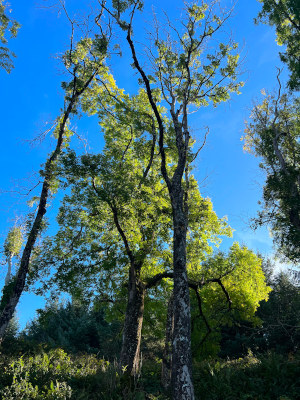
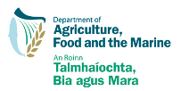

People: Paul Burns, Forest Service, Chris Gilligan, Matt Castle, Maarten Nieuwenhuis, Jon Yearsley
This applied project will assess the risk of ash dieback spread across Ireland.
Ash dieback disease is caused by the fungus Hymenoscyphus pseudoalbidus that threatens European Ash (Fraxinus excelsior) and the narrow-leafed ash (Fraxinus augustifolia) (other ash species can also be hosts for the fungus). Airborne dispersal of this fungus' spores is likely to be an important mechanism for the spread of this fungus, although other dispersal mechanisms are known, such as human transport of infected trees.
The modelling will predict the extent of fungal spore plumes from known infected sites by combining climate data from Met Eireann and the latest life-history data on the fungal pathogen (Hymenoscyphus pseudoalbidus). These data will be fed into the UK Met Office's Atmospheric Dispersion model (NAME). This model was originally developed in response to the Chernobyl accident in 1986. Today the model has been developed into a sophisticated tool for simulating atmospheric dispersion events, such as events including nuclear accidents, volcanic eruptions, chemical accidents, smoke from fires, odours.
The work is in collaboration with the Epidemiology and Modelling Group, Department of Plant Sciences, University of Cambridge and the Forest Service.
The current status of ash dieback disease in Ireland is being monitored by the Forest Service.
The final report from this project can be downloaded from the DAFM website.
